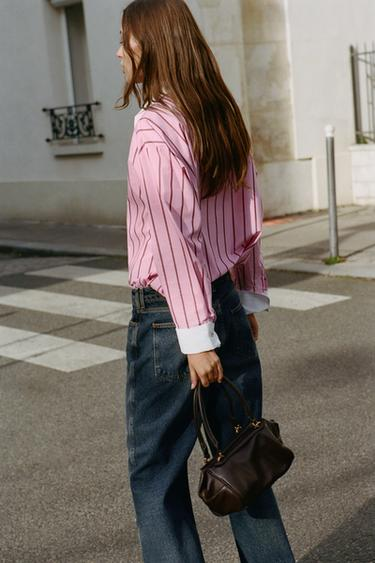
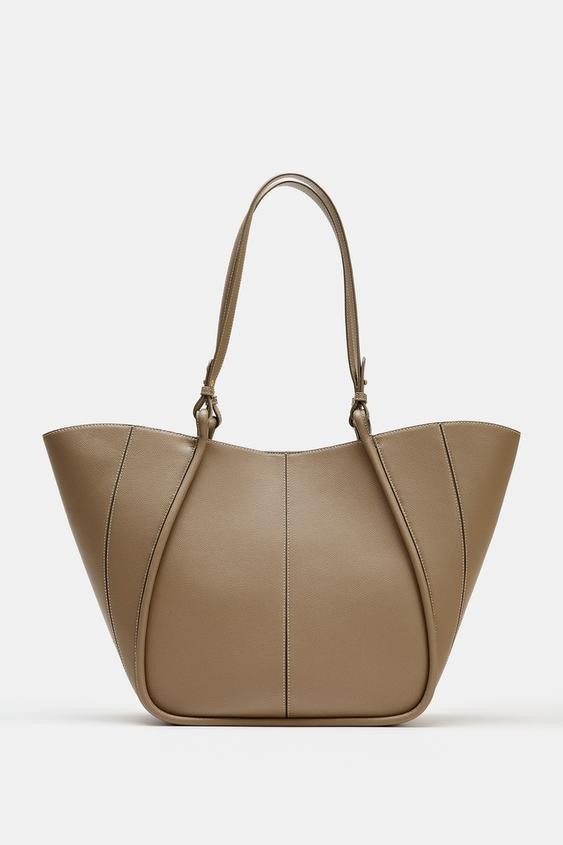

包会在身体旁边增加一块轮廓、一片颜色，也会用肩带穿过衣服。它与穿搭的关系，远不止“今天穿黑色，所以拿黑包”。一只包放在货架上合适，背到身上却显得拥挤，往往是因为包身、肩带与衣服的体积没有一起考虑。
以 ZARA 的几款包袋与官方造型为例，可以从三个问题入手：需要带什么，包会在身体什么位置，以及希望它与服装保持连续，还是形成一个明确的变化。尺寸、种类与颜色，都可以放回这些关系中判断。
先分清包型与背法
托特包通常有较大的开口和双提手；水桶包强调向下延伸的袋身与底部空间；保龄球包多有横向、圆弧形的包身；双肩包把包放到背部；手拿包则减少长肩带的存在。这些名称帮助辨认结构，却不能单独说明容量和搭配效果。
“斜挎”首先是携带方式。托特、小方包甚至保龄球包，加上长肩带后都可能斜挎。同一只包手提时位于腿侧，短肩背时贴近腋下，斜挎时又会在胸前增加一条线。判断时，应同时看包身与背法，不必把商品名称当成互不相容的分类。
收纳需求也应提前明确。手机、钥匙与卡包，和电脑、水杯、折叠伞，对开口、厚度和承重的要求不同。若每天都需要第二只袋子补充容量，第一只包即使好看，也只承担了部分任务；这可以是一种有意安排，但不应在买回之后才发现。
小包的作用：留下服装，让局部有一个落点

图1：棕色迷你保龄球包与条纹衬衫、牛仔裤。图片来源：ZARA 商品页，款号 6063/710/700。
这套造型中，粉色衬衫已有竖向条纹、宽白袖口和较松的下摆，牛仔裤又留下较大的深蓝色面积。棕包没有增加新的花纹，而是以紧凑的圆弧包身，落在手与裤子旁边。衬衫仍是主要的图案来源，包负责补充一个较集中的深色形状。
官方标注的高、横向长度与厚度为 14.5 × 23 × 15 厘米。这里最值得注意的是厚度：23 厘米并不长，但15厘米的侧面使它有较饱满的体积。把它与同样横向长度、只有几厘米厚的扁平小包比较，两者贴身程度与装入物品后的外形会很不同。
因此，“小包”不等于薄，也不等于能装。外部尺寸没有扣除缝边、内袋与弧形顶部，不能直接相乘当成可用容量。手机能否通过包口、长钱包能否平放，仍要看具体物件与开口。照片中的空包或轻装状态，也不代表放进日常用品后仍保持同样的轮廓。
这款包手提后，肩部与衬衫前襟没有新增带子，白袖口和条纹得以完整显露。代价是占用一只手。若换上商品附带的链条肩带，携带方式会更自由，但链条也会在上半身增加亮点，视觉重点随之改变。搭配的变化来自携带方式，未必需要换一只包。
水桶包与短肩带：包身在哪里，往往比名称更重要

图2：酒红色水桶肩包与黑色外套。图片来源：ZARA 商品页，款号 6452/810/624。
图中的外套肩部与袖子较宽，衣领和拉链形成清楚的折线。酒红包顺着身体一侧垂下，较宽的下部延续了外套的分量；肩带则把上方肩部与下方包身连起来。包没有变成独立悬挂的装饰，而是参与了侧面轮廓。
它的外部尺寸为 30.5 × 33 × 18 厘米，明显比前一款高、厚。这样的包身贴在腰胯附近，会增加该处的可见体积。这里不必立刻下结论说它“显胖”：若穿搭本就追求宽松与厚实，增加分量可能正是需要的；若希望保留收腰与裙摆的分界，就要注意它是否遮住了那一段结构。
短肩带还关系到腋下空间。夏天穿薄上衣能轻松夹住的包，换成厚外套，可能需要抬高手臂才能背好。试背时看包身离腋下有多远，比只看肩带总长更有用。可调节肩带提供调整余地，但调整后包底的位置也会变化，应连同整身衣服一起看。
酒红在这里较克制，是因为它与黑色外套都偏深，颜色有所区别，明暗却没有猛烈冲突。包上的金属扣只是小面积亮点。假设换成明亮的橙红色，或带强反光的漆面，包会更早吸引视线；这不一定更好或更差，而是从延续外套转向强调配饰。
大托特：看横向展开，也看底部怎样收住

图3：灰褐色双提手托特包。图片来源：ZARA 商品页，款号 6076/810/131。此图为商品静物，不能据此判断实际上身位置。
这只包的高、横向长度与厚度为 30.5 × 47.5 × 12 厘米。包口向外张开，底部较窄，形成上宽下收的轮廓。它与前一款水桶包高度相近，但横向更长、厚度较小，视觉上更像一片展开的面。单看“大号”两个字，就会漏掉这种区别。
长提手和竖向车线把较宽的包面分成几部分，使视线可以从包口向底部移动。灰褐色也让这些结构比鲜艳色块更容易被注意。它仍是一只面积较大的包，不能因为颜色温和，就认为背上身后没有分量。
如果与较窄的连衣裙搭配，包会在身体一侧形成明显扩展；如果与宽外套、宽裤搭配，包与衣服可能共同构成较宽松的外轮廓。两种关系都能成立。区别在于希望包成为一个独立形状，还是希望全身都保持较大的体积。
托特的开口方便放取，也要考虑移动场景。这款采用磁扣，并有可拆卸的拉链内隔袋；内隔袋可以收拢小物，却不等于整个包口都由拉链封闭。通勤时是否需要频繁弯腰、乘坐拥挤交通工具，都会影响这种结构是否适合。大包还能装，不代表适合一直加装；实际重量与提手压肩，必须另行判断。
尺寸选择，不需要给身高规定一个包号
人高一些就必须拿大包，人小一些就只能背小包，这类规则过于粗略。照片中的比例还受外套厚度、裙长、背法与取景影响。小包配大衣可以形成强烈的尺度差，大包配简洁衣服也可以成为造型主体，关键是这种差异是否清楚、是否符合使用方式。
比起单看身高，可以观察三个位置：包是否挡住希望展示的腰线；包底是否与衣服下摆挤在一起；侧面看时，包与袖子是否堆成一团。它们说明的是具体形状之间的关系，不要求所有人都追求显高或显瘦。
看商品尺寸时，也应核对品牌写的是高、长、宽，还是高、宽、深。本文为便于比较，将后两项理解为正面的横向长度与侧面厚度；数字仍沿各商品页，不把它们当作开口尺寸或内部净空间。长提手形成的空隙，还应与包身尺寸分开考虑。
颜色与材质：决定包融入衣服，还是从衣服中跳出来
棕色并非天然比黑色柔和。深棕包放在浅色衣服旁，仍会形成很强的明暗差；黑包放在黑外套旁，可能主要依靠光泽与边缘被看见。先比较包与附近衣服的明暗、面积和表面，再讨论颜色名称，判断会更准确。
鞋包同色是一种容易建立联系的方法，却不必追求完全一致。图1中，棕包已经通过深色分量与牛仔裤保持联系；图2则用深酒红与黑色形成相近明度下的差别。也可以让包呼应围巾、印花或腰带中的一小块颜色，减少各件配饰彼此无关的感觉。
材质又会改变同一颜色的表现。光滑、反光的包面容易出现明确亮点；绒面把反光打散，通常更容易与毛衣、毛呢的表面衔接；编织或密集装饰会增加细节。若衣服已有条纹、蕾丝与明显首饰，包可以减少表面变化；若衣服是一整片素色，也可以让包承担较多纹理。这是分配注意力的方法，不是只能保留一个重点的硬性规定。
外观与材料成分还应区分。前两款棕色迷你包、酒红水桶包的官方成分标注为聚氨酯，不能因为表面呈现皮革纹理就称为真皮。搭配可以讨论可见质感，耐用、重量、手感与保养则需依据材料说明及实物，不能仅凭照片判断。
双肩包、斜挎包与手拿包，分别改变什么
双肩包把主要体积移到背部，适合需要空出双手的场景。与连衣裙或西装搭配时，重点看背带会怎样压住肩部、背部是否鼓起，以及包底与外套下摆的距离。简洁外形与密集口袋、织带形成的效果不同，不能只以“双肩包太休闲”概括全部款式。
斜挎包使包较容易留在身体附近，但肩带会穿过前襟。领口已有项链、围巾或复杂系带时，新增的斜线可能使上半身更拥挤。可以尝试把包移到侧后方，或调整肩带长度，再看腰部与衣服图案的关系；调整是否舒服，仍以走动和取物为准。
手拿包与小型晚装包减少了长带子的干扰，可以保留礼服肩颈或上衣前部的完整。它们同时占用手部，收纳空间通常需要更仔细地核对。若场景涉及长时间站立、拿饮品或拍照，附带短链与可拆肩带可能比静态造型更重要。
最后试背时，把当天真正要带的物品装进去，穿上常用外套，分别看正面、侧面与背面；走几步，坐下，再取一次手机。这样才能同时看到包的轮廓、肩带的落点与使用中的变化。对一只日常包而言，好看的静物外形只是起点，装好、背好之后的状态才是搭配的实际结果。
资料
商品名称、款号与尺寸依据文中三个 ZARA 官方区域商品页，查阅日期为2026年10月30日；页面可能更新或下架。图片归 ZARA／相应权利人，本文用于具体款式与造型分析；不表示另获品牌授权。搭配效果为基于图像的分析与试背建议，未进行实物容量、舒适度或耐用测试。延伸阅读：《女士配饰：首饰、包袋与服装的配合》。